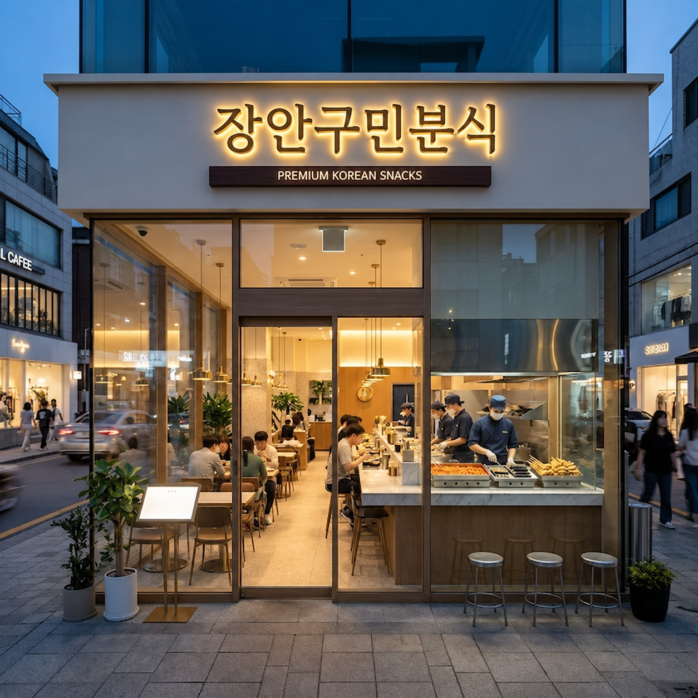

맛있는 한 끼, 다정한 우리 동네좋아하는 분식,
AI 생성 음식 이미지좋아하는 분식,
함께하는 행복.
Always delicious!
바쁜 하루에 잠깐의 쉼표.
익숙해서 더 생각나는 분식 한 상을
장안구민분식에서 만나보세요.
든든한
한 끼 메뉴
한 끼 메뉴
취향대로
고르는 즐거움
고르는 즐거움
함께 나누는
분식 한 상
분식 한 상
가까운
우리 동네
우리 동네

한눈에 보기주문 문의
전화로 편하게단체·예약
가능 여부 문의수원 송죽동
우리 동네 분식
GOOD TO KNOW편한 한 끼를 위한
편한 한 끼를 위한
작은 안내.
궁금한 점은 미리 확인하고,
먹고 싶은 메뉴는 편하게 골라보세요.
메뉴 가격은 어디서 확인하나요?
메뉴 소개에서 오뎅 500원부터 돈까스 5,000원까지 9개 메뉴의 가격을 확인하실 수 있습니다.
포장이나 배달도 가능한가요?
포장·배달 가능 여부는 010-1234-5678로 문의해 주세요. 홈페이지에서는 결제와 주문을 접수하지 않습니다.
영업시간과 휴무일이 궁금해요.
방문 전 010-1234-5678로 영업시간과 휴무일을 확인해 주세요.
맵기와 알레르기 재료를 확인할 수 있나요?
메뉴별 원재료와 맵기 조절 가능 여부는 주문 전에 매장에 문의해 주세요.
단체 주문이나 사전 예약이 되나요?
희망 날짜, 시간, 인원과 메뉴를 정해 전화로 문의해 주세요. 준비 가능 여부를 먼저 확인하실 수 있습니다.
COME SAY HELLO오늘의 맛있는 쉼표,
수원시 장안구 송죽동 123
전화 문의 010-1234-5678오늘의 맛있는 쉼표,
장안구민분식.
수원시 장안구 송죽동 123영업시간과 이용 가능 여부는 방문 전 전화로 확인해 주세요.